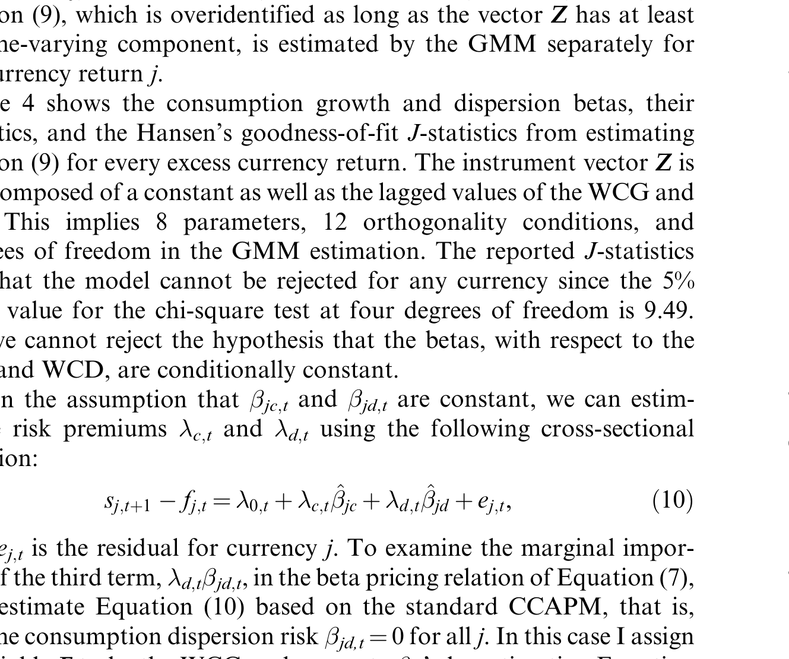
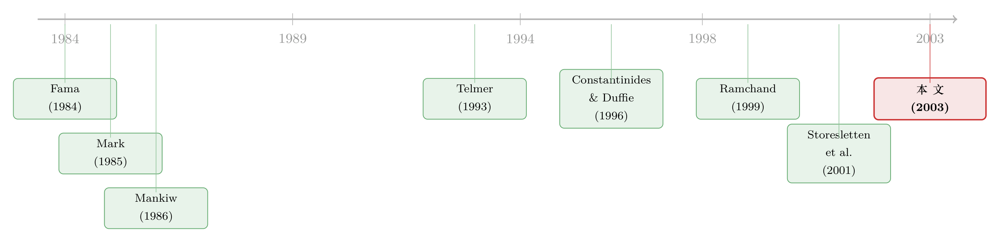

汇率溢价之谜，藏在各国消费「拉开的差距」里
本文读的是 Sarkissian (2003, Review of Financial Studies)：把 Constantinides–Duffie 的「异质消费者、不完全市场」模型搬进一个多国世界，用各国消费增长率之间拉开的「跨国离散度」当作一个新的风险因子。它反周期、与货币收益负相关，于是在远低于标准 CCAPM 所需的风险厌恶下，就能生成时变的货币风险溢价，并对货币收益的横截面差异给出一定的解释力——「远期溢价之谜」因此被稍稍松动了一点。
1 一个赌了三十年都没赢的赌局
先说一个外汇市场上人尽皆知、却谁也讲不圆的现象。
你手里有美元，想赚一笔。远期市场告诉你：一年后用 1.05 美元换 1 欧元。如果「无偏假设」成立，那么这个 1.05 就该是市场对未来即期汇率的无偏预测——平均而言，一年后即期汇率确实会涨到 1.05 附近，你做远期不赚不赔。
可数据偏偏不这么走。远期溢价之谜（forward premium puzzle）说的正是这件事：未来即期汇率的变化，与今天的远期溢价之间，竟是一个稳定的负相关关系。换句话说，当一种货币在远期市场被「打折」时，它未来反而倾向于升值——你只要反着远期合约的方向下注，长期就能赚钱。这个负号，从 Bilson (1981)、Fama (1984)、Hodrick and Srivastava (1984) 一路被记录到今天，几乎成了国际金融里最顽固的一块石头。
学界对它最被广泛接受的解释是：外汇市场里存在一个时变的风险溢价（time-varying risk premium）。你赚到的不是「免费的午餐」，而是替别人承担了某种会随时间起伏的风险，拿到的报酬。
这跟股票市场里的股权溢价之谜（equity premium puzzle，Mehra and Prescott 1985）是一对孪生兄弟：那边问「为什么平均股票收益这么高」，这边问「为什么货币收益的条件溢价这么大、还会随时间变」。本质都是：标准消费模型生成不出足够大、足够会动的风险溢价。
接着，一个自然的问题是：这个时变溢价，能不能用我们手里最正统的那套资产定价工具——消费资本资产定价模型（consumption CAPM, CCAPM）——讲清楚？
答案令人沮丧。Mark (1985)、Backus, Gregory and Telmer (1993)、Bekaert (1996)、Bekaert, Hodrick and Marshall (1997) 一篇接一篇地证明：建立在完全市场（complete markets）、代表性消费者假设之上的 CCAPM，在「经济上合理」的风险厌恶系数下，既解释不了货币溢价的时间变动，也解释不了事后货币收益巨大的横截面差异。要么你得把风险厌恶系数调到高得离谱，要么模型就是不动。
于是问题就卡在这里。这篇文章想问的是：如果市场根本就不完全呢？
2 被绕开的那道坎：消费离散度，从哪儿来
要理解这篇论文的巧思，得先看清前人是被什么绊住的。
完全市场假设的核心，是「代表性消费者」——所有人面对的边际替代率都一样，于是你只需要盯住总消费（aggregate consumption）。可现实里，人们承担着无法完全保险的异质性冲击（idiosyncratic shocks）：失业、疾病、行业衰退。如果这些冲击不能被市场对冲掉，那么决定资产价格的，就不再只是总消费，还有个体之间消费的离散程度。
但这条路上有两派人。早期的 Telmer (1993)、Heaton and Lucas (1996) 把异质性冲击建模成短暂的（transitory）事件——今天倒霉、明天就能借钱熨平——结论是：不完全市场和个体消费增长，对资产定价无关紧要。
然后，真正关键的一步出现在 Constantinides and Duffie (1996，下称 CD)。他们说：如果冲击是持久的（persistent）呢？一个人一旦被打到低消费的轨道上，就很难再爬回来。这时，投资者之间消费的横截面方差（cross-sectional variance）就会对资产价格产生实打实的影响——尤其当这个方差反周期（衰退时大家被打得参差不齐）的时候。Storesletten, Telmer and Yaron (2001) 后来用收入数据确认：异质性风险确实既有短暂成分，也有一个显著的持久成分，且应当在低频上度量——这一点对用消费数据做检验格外友好。
CD 模型很漂亮，但有个老大难：它要的是个体消费增长的横截面方差的时间序列。这种微观面板，频率低、噪声大、几乎拿不到干净的时序。所以多数后续文献只能困在美国一国数据里打转。
这篇论文最聪明的地方，恰恰是把这道坎绕了过去。作者的观察是：
如果各国之间的消费风险无法被完全分担，那么消费的异质性就不只存在于一国之内，也存在于各国之间。
而国家层面的消费增长，是直接可观测的。于是作者干脆把「个体 i」换成「国家 j」：用各国总消费增长率之间的横截面方差——他称之为跨国消费离散度（cross-country consumption dispersion）——来扮演 CD 模型里那个本来无从观测的 \(dw\)。这个量，National Accounts 里就能算出来。
这是一种「换一个尺度看异质性」的手法：CD 关心的是「一国之内人与人的差距」，本文换成「一个世界之内国与国的差距」。代价是它只刻画了跨国异质性，把一国内部的异质性留作了一个无法单独识别的待估项——这一点作者很诚实，我们后面会回到它。
3 模型：把 CD 模型搬进多国世界
这是一篇带模型的论文，值得把推导一步步走清楚。
第一块积木，是所有资产定价的出发点——欧拉方程（Euler equation）。对任意资产 \(j\)、定价核 \(m_{t+1}\)：
$$E_t\left[m_{t+1}\,R_{j,t+1}\right]=1$$
在 CCAPM 里，\(m_{t+1}\) 就是消费的跨期边际替代率（intertemporal marginal rate of substitution, IMRS）。
第二块积木，是 CD 在异质消费者、单一商品、持久收入冲击下推出的、非代表性消费者的欧拉方程。对国家 \(j\) 里的某个投资者，加总后得到：
$$\rho\,E_t\!\left[\left(\frac{C_{j,t+1}}{C_{j,t}}\right)^{-\gamma}\exp\!\left(\frac{\gamma(\gamma+1)}{2}\,dw_{j,t+1}\right)R_{j,t+1}\right]=1$$
这里 \(C_{j,t}\) 是国家 \(j\) 在 \(t\) 期的总消费，\(\gamma\) 是相对风险厌恶，\(\rho\) 是时间偏好，而
$$dw_{j,t}=\operatorname{var}_i\!\left[\ln\!\left(\frac{C_{ij,t}}{C_{ij,t-1}}\right)\right]$$
正是国家 \(j\) 内部、投资者之间消费增长的横截面方差。注意那个新冒出来的指数项：当消费离散度 \(dw\) 越大，IMRS 就被整体抬高——这就是异质性进入定价核的通道。
真正关键的一步，是作者把投资者 \(i\) 在国家 \(j\) 的消费写成世界消费的一层层分解：\(C_{ij,t}=\theta_{ij,t}\,\theta_{j,t}\,C_t\)，其中 \(\theta_{ij,t}\) 是投资者 \(i\) 占本国消费的份额、\(\theta_{j,t}\) 是国家 \(j\) 占世界消费的份额。再假设大数定律在投资者和国家两个维度上都成立，把两层份额各自设成带漂移的对数正态过程。用迭代期望，国家 \(j\) 的新总量欧拉方程就变成：
$$\rho\,E_t\!\left[\left(\frac{C_{t+1}}{C_t}\right)^{-\gamma}\exp\!\left(\frac{\gamma(\gamma+1)}{2}\big(d_{t+1}+dw_{j,t+1}\big)\right)R_{j,t+1}\right]=1$$
这一步的妙处在于：定价核里出现了两个离散度——国家内部的 \(dw_{j,t}\)，以及跨国的
$$d_t=\operatorname{var}_j\!\left[\ln\!\left(\frac{C_{j,t}}{C_{j,t-1}}\right)\right]$$
由于一国内部的离散度时序拿不到，\(d_j\) 无法与 \(dw\) 分开识别。于是作者退一步，把超额收益形式写成最终用来检验的方程：
这里 \(r_{j,t+1}\) 是货币 \(j\) 在 \(t{+}1\) 的超额收益，\(k\) 是一个尺度因子，代表「跨国离散度之外、以及被错测的那部分」消费变动。一个值得强调的细节：离散度的大小只影响收益的水平，而不影响它诱导的风险溢价——因为溢价完全由离散度与收益、与总消费增长的协方差决定，而不是由它的均值决定。所以那个 ad hoc 的 \(k\) 改变不了溢价的本质。
为什么这套机制能比标准 CCAPM 生成更大的条件溢价？令 \(K=0.5\,k\,\gamma(\gamma+1)\)。由于对任何正的 \(\gamma\)、\(k\) 都有 \(\exp(Kd_{t+1})\ge 1\)，而数据显示 \((C_{t+1}/C_t)^{-\gamma}\) 与 \(\exp(Kd_{t+1})\) 并不负相关，所以定价核的条件方差被放大了；又因为离散度本身与货币超额收益有相当的相关性，IMRS 与收益的条件协方差也被抬高。两条腿一起发力——货币溢价的时变，于是可以同时归因于世界消费增长（WCG）和跨国消费离散度（WCD）两个因子。
最后，估计用 Hansen (1982) 的广义矩估计（GMM），并把每种货币的平均定价误差 \(\alpha_j\)（类似 Jensen's alpha）一并估出来：
$$E_t\!\left[\left(\frac{C_{t+1}}{C_t}\right)^{-\gamma}\exp\!\left(k\,\frac{\gamma(\gamma+1)}{2}\,d_{t+1}\right)\big(r_{j,t+1}-\alpha_j\big)\right]=0$$
检验模型是否成立，等价于检验这些 \(\alpha_j\) 是否都为零。
4 数据，与一个反周期的事实
模型再漂亮，也得先在数据里看到那个「该有的形状」，否则一切都是空谈。
样本是季度数据，1973:2 到 1995:4，共 91 个观测。八个发达国家：加拿大、法国、德国、意大利、日本、瑞士、英国，以及作为本币（计价基准）的美国。汇率来自 Harris Bank 周报的即期与一月期远期报价。消费数据来自各国 National Accounts，除以季度人口得人均；世界人均消费增长（WCG）按 GDP 加权、用本币计价的增长率加总——这样做是为了不让汇率波动透过美元计价污染掉消费的时序性质。跨国消费离散度（WCD）则是各国本币人均消费增长率对数变化的方差。
那么数据里到底有没有那个「该有的形状」？
首先看一阶矩和二阶矩。WCG 的均值是 0.0049、标准差 0.0057，和美国数据的 0.0041、0.0069 非常接近——说明世界总量是个合理的基准。世界远期溢价（WFP）的一阶自相关高达 0.70，是个高度持续的变量；货币收益的自相关则只在 0.05–0.2 之间。
接着是最要命的一张相关性表。WCG 与 WCD 的同期相关是 −0.31——消费离散度是反周期的：世界经济增长越慢，各国消费拉开的差距越大。更重要的是，WCD 与七种货币里的五种呈现中等程度的负相关；滞后一期的 WCD 与几乎所有货币收益（加元除外）也都负相关，与 WFP 则是正相关。这正是模型需要的：一个反周期、且与货币收益负相关的风险因子。
图里这一点更直观：WCD 的三个最大峰值，恰好落在 1973–1975、1980–1981 和 1990 年代初这三轮全球衰退里。这与 Mankiw (1986)、Constantinides and Duffie (1996)、Storesletten, Telmer and Yaron (2001) 反复强调的直觉吻合——不可保险的风险，只有在它与总量冲击反向相关时，才会对资产收益产生可度量的影响。数据里看到了这个负号，实证工作才有指望。
5 它真的更好用吗
于是反转出现了：把这个反周期的离散度因子塞进欧拉方程之后，模型的表现确实变了。
论文的核心结论有三层。第一，相比标准 CCAPM，这个国际版 CD 模型能在显著更低的风险厌恶水平上生成货币风险溢价——这正是对「股权溢价/远期溢价之谜里风险厌恶高得离谱」这一痛点的正面回应。第二，它缩短了 Hansen and Jagannathan (1997) 距离，也就是说，这个定价核离「能给所有资产正确定价」的可行集更近了。第三，在 beta 定价框架下，跨国消费离散度对货币收益的横截面差异有解释力——而横截面差异，恰恰是代表性 CCAPM 最束手无策的地方。
如表 4 所示，作者把货币收益对世界消费增长 beta 与离散度 beta 做了横截面定价，报告了两个 beta 及其风险价格。离散度因子在解释货币收益横截面上扮演了实质性的角色——这也是「远期溢价之谜被部分缓解」这一说法的落点。

Table 4: shows the consumption growth and dispersion betas, their
需要说清楚的是：这不是一篇宣称「谜题已解」的论文。作者的措辞始终克制——离散度对货币定价是 "mildly helpful"（略有帮助），是把谜题「往缓解的方向推了一步」，而非彻底终结。它真正的贡献，是把 CD 这套理论上极漂亮、实证上却几乎无人能用的模型，第一次系统地、用可观测数据，搬到了货币定价的横截面里。
（关于「汇率溢价究竟该归给什么风险」这条更大的争论，可对照《汇率之谜的另一半：把它交还给两国资本市场的「风险价格」》与《汇率里那块「找不到」的风险溢价》；而把同一套「不完全市场 / 有限风险分担」逻辑用在股权溢价上的做法，可参见《谁被挡在股市门外，并不重要——重看「有限参与」对股权溢价的真实贡献》。)
6 文献脉络
把这篇文章放回它生长的那条线上，脉络就清楚了。
一端是远期溢价之谜本身的记录：Fama (1984) 把它钉成了一个标准事实，随后是一长串确认其稳健性、并把它归因于时变风险溢价的工作。另一端是消费资产定价的失败史：Mark (1985) 等人证明代表性 CCAPM 在合理参数下解释不了它。
转折来自不完全市场这一支。Mankiw (1986) 先指出「总量冲击的集中度」会抬高股权溢价；Telmer (1993) 用短暂冲击得出「不完全市场无关紧要」的悲观结论；而 Constantinides and Duffie (1996) 用持久冲击把结论翻了过来——异质消费者的横截面方差，是定价核里被漏掉的一块。Storesletten, Telmer and Yaron (2001) 从收入数据这一侧确认了持久成分的存在。
Ramchand (1999) 最先把 CD 模型扩展到两国两商品的框架，但走的是校准（calibration）的路子。本文则站在这条线的交汇处：保留单一商品范式、只刻画跨国异质性、并直接用八国数据做实证检验，专门冲着货币定价与远期溢价之谜而去。

评论与延伸（Q&A + 研究方向）
（a）几个可能的疑问
Q：用「跨国离散度」替代「国内个体离散度」，这个偷梁换柱合法吗？
这是全文最大的张力。CD 模型严格说只对「连续统一样多的异质个体」成立——这对一国之内的个人是自然的，对八个国家就有点勉强。作者自己在脚注里承认：没有跨国大数定律，\(C_t=\sum_j\theta_{j,t}C_t\) 严格说并不等于世界总消费。所以这是一个有用但不无瑕疵的近似：它的合理性，最终靠数据里那个反周期、负相关的离散度撑着，而不是靠理论的严丝合缝。
Q：那个 ad hoc 的尺度因子 \(k\)，是不是在偷偷拟合数据？
不会动摇溢价的来源。关键在于：离散度的大小只影响收益的水平，而风险溢价由离散度与收益、与总消费的协方差决定。\(k\) 只是把「未识别的国内离散度 + 被错测的跨国离散度」打包成一个标量，它改变不了协方差结构，因而改变不了溢价的本质。当然，把多种说不清的东西塞进一个待估标量，本身就削弱了结构解释的力度。
Q：91 个季度观测，做 GMM 加横截面定价，统计功效够吗？
老实说，偏紧。八国、91 期的样本里，货币之间的同期相关又极高（德国马克与法国法郎高达
0.93），有效横截面维度远小于名义上的七种货币。这让横截面定价的标准误天然偏大，也是为什么作者用「mildly helpful」这种克制措辞的现实原因之一。
Q：为什么加元几乎总是那个「例外」？
数据里加元与其他所有货币的相关性最低，与滞后 WCD 的相关符号也常常反过来。这大概率反映了加拿大经济与美国（计价国）的高度一体化——对一个与本币国几乎同步的经济体，「跨国消费离散度」这个因子本就该失灵。这既是模型的一个软肋，也是它内部逻辑自洽的一个旁证。
Q：这跟「用习惯形成或长期风险解释溢价」的路线比，优势在哪？
它走的是横截面而非只是时序。习惯形成、长期风险这类模型擅长放大单一国家的时变溢价，但对「为什么不同货币的事后收益差这么多」往往乏力。本文的卖点正是离散度因子能进入 beta 定价、解释横截面——这是它相对那一支的差异化所在。
Q：远期溢价之谜被「解决」了吗？
没有。作者从头到尾的定位都是「缓解（ease）」「略有帮助」。它没能把那个负号彻底归零，只是给出了一个比代表性 CCAPM 更省风险厌恶、且能沾上横截面的机制。把它当成「一块新拼图」，而不是「谜底」。
（b）几个可能的研究问题与提案
- 把离散度因子搬到公司债 / 信用利差的横截面
【经济故事】跨国（或跨行业）消费离散度反周期，而信用利差也强烈反周期。如果不可分担的异质性消费冲击是定价核的一部分，那它对违约风险溢价的横截面解释力，可能比对货币更强——毕竟信用资产对衰退期的尾部冲击更敏感。 【可行性】中。消费/收入离散度数据可得，公司债横截面（如 TRACE + Moody's 评级）也成熟；难点在于把低频的离散度与高频的债券收益对齐，以及控制掉流动性因子。识别上可借鉴本文的 beta 定价 + GMM。
- 外资持有人结构作为「跨境风险分担」的代理变量
【经济故事】本文假设各国市场「开放但不完全」。一个自然的检验是：当一国资本市场的外资持有比例上升（风险分担改善）时，本文的离散度因子对该国资产的定价权是否应当减弱？这把一个宏观假设变成了可在微观横截面上证伪的命题。 【可行性】中。需要跨国的外资持股 / 持债数据（如 IMF CPIS、各国托管数据），与本文的离散度构造拼接。识别可用资本账户开放的时点变化做事件研究。
- 用更长、更现代的样本重估（含欧元区与新兴市场）
【经济故事】本文样本止于 1995 年、且都是发达国家。欧元诞生抹掉了若干「货币」，而新兴市场的跨国消费离散度可能远大于 G7——Bansal and Dahlquist (2000) 已指出发达与新兴经济体的远期溢价讲的是「不同的故事」。 【可行性】高。数据纯粹是更新与扩样的问题，方法照搬即可；真正有意思的是检验离散度机制在新兴市场是放大还是失效。
- 离散度因子与「货币尾部风险」是不是同一回事？
【经济故事】反周期的跨国消费离散度，与近年文献里货币篮子的崩溃 / 尾部风险高度神似。两者是否在定价上相互替代？若是，本文的消费离散度也许给那块「尾部保险费」提供了一个基于基本面的微观基础。 【可行性】中。需要把消费离散度与期权隐含的货币尾部风险（或 carry 因子的偏度）放进同一个定价检验里，看谁挤掉谁。（这条线与《一篮子货币里，藏着一份免费的「尾部保险」》、《汇率藏在一张「违约保单」的价差里》天然衔接。）
我的判断
这篇文章的贡献，在于一次漂亮的「降维」：它没有去硬啃 CD 模型里那个拿不到的国内消费面板，而是换一个尺度，用各国之间的消费差距把同一套异质性逻辑做实，从而第一次让这套理论能在货币定价的横截面上被检验。反周期、与收益负相关的离散度因子，是它最扎实的实证基石。
但我对识别的担心也很具体。其一，跨国大数定律这个前提对八个国家而言是真实的拉伸，作者的坦诚值得尊重，却也意味着结构解释要打个折扣。其二，样本太小、货币之间相关性太高，使得横截面定价的统计功效有限，「mildly helpful」与其说是谦虚，不如说是数据的实话。其三，那个吸纳了一切未识别项的尺度因子 \(k\)，让人很难判断离散度因子的解释力里，有多少是机制、有多少是自由度。
我接下来最想看到的，是两件事：一是用今天动辄上百国、跨越数十年的消费与汇率数据重做一遍，看那个 −0.31 的反周期相关与离散度的定价权是否稳健；二是把这个因子拉到公司债与信用市场的横截面里去——如果不可分担的消费风险真的是定价核的一部分，它在对衰退最敏感的信用资产上，理应留下比货币更清晰的指纹。
参考文献
- Backus, D. K., A. Gregory, and C. I. Telmer (1993). Accounting for Forward Rates in Markets for Foreign Currency. Journal of Finance 48(5), 1887–1908.
- Bansal, R., and M. Dahlquist (2000). The Forward Premium Puzzle: Different Tales from Developed and Emerging Economies. Journal of International Economics 51(1), 115–144.
- Bekaert, G. (1996). The Time-Variation of Risk and Return in Foreign Exchange Markets: A General Equilibrium Perspective. Review of Financial Studies 9(2), 427–470.
- Bilson, J. F. O. (1981). The 'Speculative Efficiency' Hypothesis. Journal of Business 54(3), 435–452.
- Constantinides, G., and D. Duffie (1996). Asset Pricing with Heterogeneous Consumers. Journal of Political Economy 104(2), 219–240.
- Fama, E. (1984). Forward and Spot Exchange Rates. Journal of Monetary Economics 14(3), 319–338.
- Hansen, L. (1982). Large Sample Properties of Generalized Method of Moments Estimators. Econometrica 50(4), 1029–1054.
- Hansen, L., and R. Jagannathan (1997). Assessing Specification Errors in Stochastic Discount Factor Models. Journal of Finance 52(2), 557–590.
- Heaton, J., and D. Lucas (1996). Evaluating the Effects of Incomplete Markets on Risk Sharing and Asset Pricing. Journal of Political Economy 104(3), 443–487.
- Hodrick, R. J., and S. Srivastava (1984). An Investigation of Risk and Return in Forward Foreign Exchange. Journal of International Money and Finance 3(1), 1–29.
- Mankiw, N. G. (1986). The Equity Premium and the Concentration of Aggregate Shocks. Journal of Financial Economics 17(1), 211–219.
- Mark, N. (1985). On Time-Varying Risk Premiums in the Foreign Exchange Market. Journal of Monetary Economics 16(1), 3–18.
- Mehra, R., and E. Prescott (1985). The Equity Premium Puzzle. Journal of Monetary Economics 15(2), 145–161.
- Ramchand, L. (1999). Asset Pricing in International Markets in the Context of Agent Heterogeneity and Market Incompleteness. Journal of International Money and Finance 18(6), 871–890.
- Sarkissian, S. (2003). Incomplete Consumption Risk Sharing and Currency Risk Premiums. Review of Financial Studies 16(3), 983–1005.
- Storesletten, K., C. I. Telmer, and A. Yaron (2001). Asset Pricing with Idiosyncratic Risk and Overlapping Generations. Working Paper, Carnegie-Mellon University.
- Telmer, C. I. (1993). Asset Pricing Puzzles and Incomplete Markets. Journal of Finance 48(5), 1803–1832.